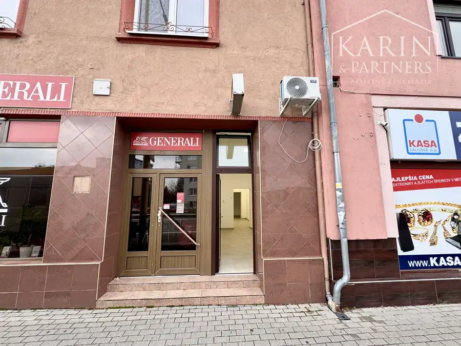
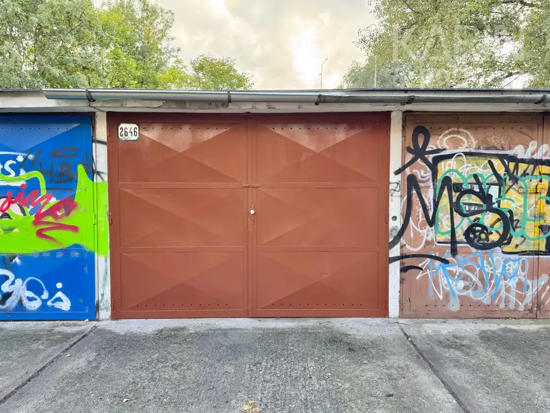
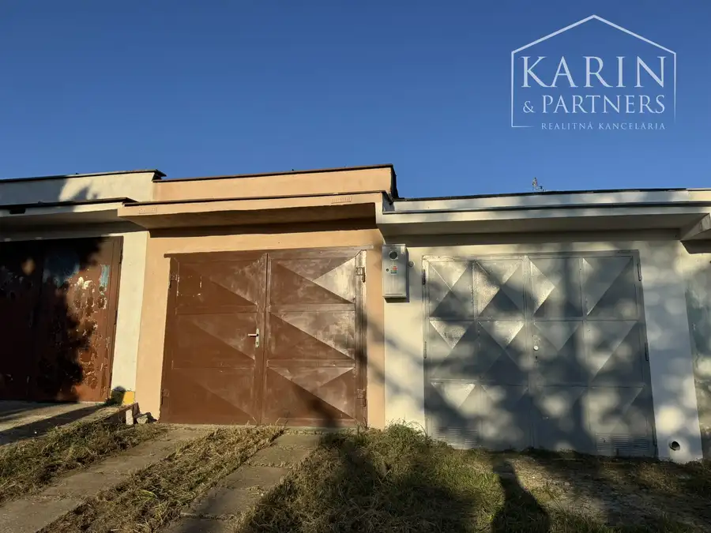
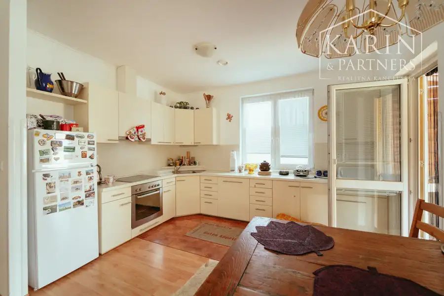
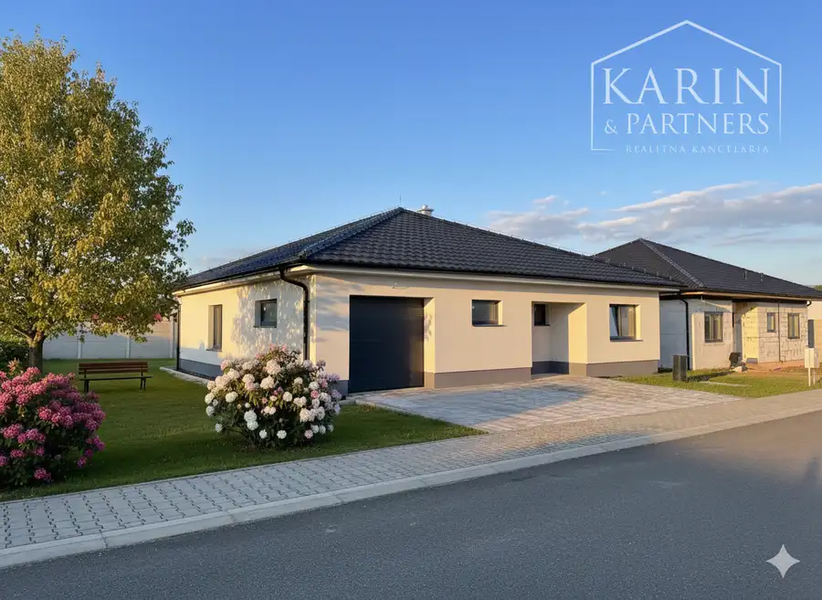
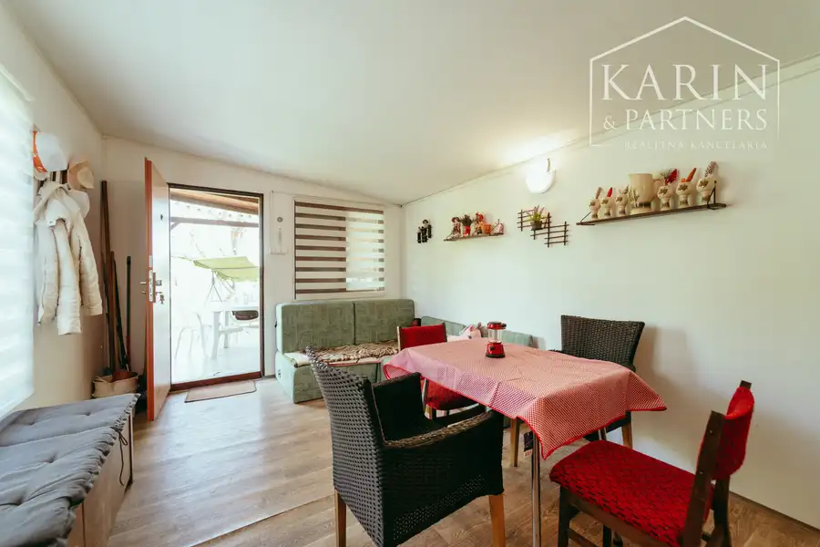
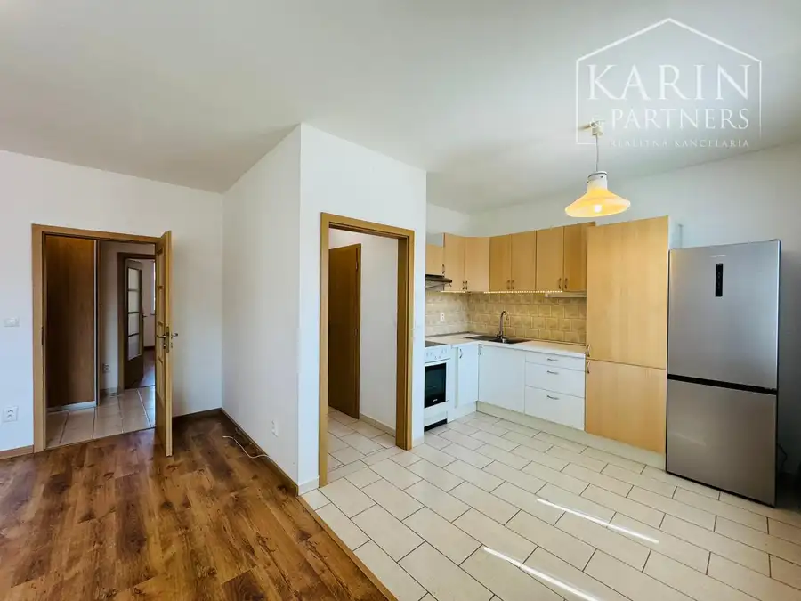
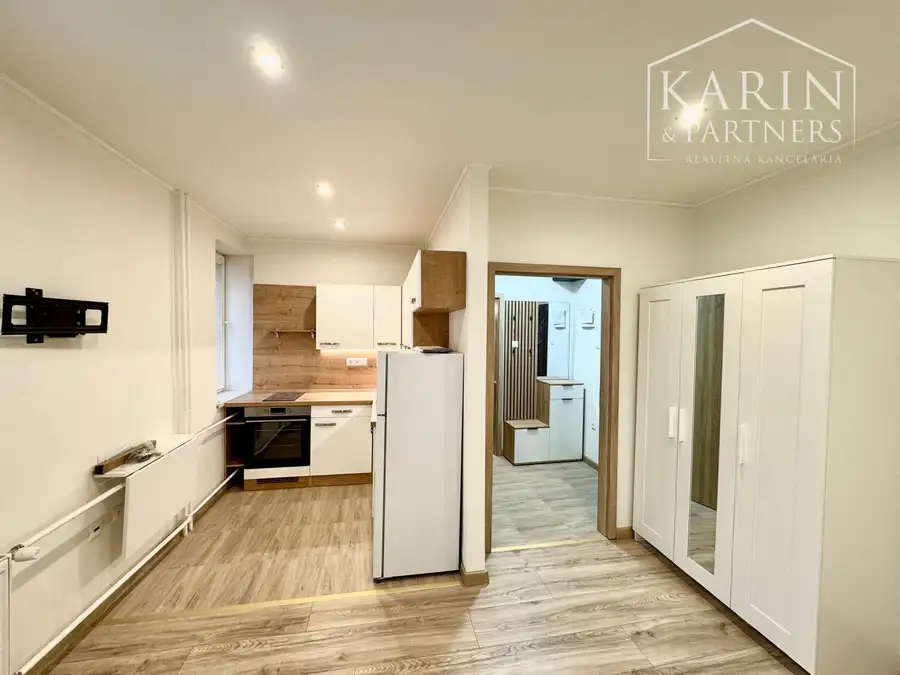

Aktuálna ponuka
12 nehnuteľností, predovšetkým rodinné domy, komerčné priestory, byty. Každá má vlastnú stránku s fotkami, popisom a mapou.
Prezrieť ponukuMichal ŠtetinaRealitný maklér
Realitný maklér · KARIN & PARTNERS, s.r.o.
Predaj a prenájom nehnuteľností · Holíč, Osuské, Bílkove Humence


 DomNové2
315 000 €Hľadáme: rodinný dom v meste Holíč
Holíč
110 m²
Hľadám rodinný dom pre konkrétneho klienta v meste Holíč, ulica nie je rozhodujúca. Ak disponujete takýmto rodinným domom alebo poznáte niekoho, kto…
Komerčné priestoryNové10
149 000 €Na predaj podnikateľský objekt, Holíč
Holíč
260 m²
V zastúpení majiteľa ponúkame na predaj podnikateľský objekt v úplnom centre mesta Holíč, na ulici Bratislavská.NA PREDAJ SÚ 2/3 BUDOVY! Základné…
Chalupa, rekreačný domčekNové10
69 000 €Útulná murovaná chata s krásnym výhľadom – Osuské
Osuské
60 m²
Základné údaje:- Lokalita: ZO Opendáky, Osuské (len 8 km od Senice)- Cena: 69 000 € (vrátane kompletného zariadenia) - Úžitková plocha: 60 m² -…
DomNové2
315 000 €Hľadáme: rodinný dom v meste Holíč
Holíč
110 m²
Hľadám rodinný dom pre konkrétneho klienta v meste Holíč, ulica nie je rozhodujúca. Ak disponujete takýmto rodinným domom alebo poznáte niekoho, kto…
Komerčné priestoryNové10
149 000 €Na predaj podnikateľský objekt, Holíč
Holíč
260 m²
V zastúpení majiteľa ponúkame na predaj podnikateľský objekt v úplnom centre mesta Holíč, na ulici Bratislavská.NA PREDAJ SÚ 2/3 BUDOVY! Základné…
Chalupa, rekreačný domčekNové10
69 000 €Útulná murovaná chata s krásnym výhľadom – Osuské
Osuské
60 m²
Základné údaje:- Lokalita: ZO Opendáky, Osuské (len 8 km od Senice)- Cena: 69 000 € (vrátane kompletného zariadenia) - Úžitková plocha: 60 m² -…

Komerčné priestory5 19 000 €Na predaj garáž - d. Rapanta, Holíč Holíč 20 m² V zastúpení majiteľa Vám ponúkame na predaj garáž v osobnom vlastníctve vo výbornej lokalite – sídlisko D. Rapanta, v tichej časti mesta Holíč. Garáž…
Komerčné priestory4 18 500 €NA PREDAJ GARÁŽ - ul. Veterná, Holíč Holíč 18 m² Vo výhradnom zastúpení majiteľa Vám ponúkame na predaj garáž v osobnom vlastníctve vo výbornej lokalite – ulica Veterná, v tichej časti mesta…
Dom10 235 000 €Čarovný 4i dom s veľkou záhradou – Bílkove Humence Bílkove Humence 102 m² Predstavujeme vám presvetlený 4-izbový rodinný dom v obci Bílkove Humence. Táto nízkoenergetická stavba z roku 2010 je stvorená pre rodiny, ktoré… Dom10
210 000 €3i rodinný dom s veľkým pozemkom – Gbely, Kolónia
Gbely
143 m²
Ponúkame na predaj krásny a priestranný rodinný dom v tichej a vyhľadávanej lokalite mesta Gbely, na ulici Kolónia. Nehnuteľnosť prešla v posledných…
Dom10
210 000 €3i rodinný dom s veľkým pozemkom – Gbely, Kolónia
Gbely
143 m²
Ponúkame na predaj krásny a priestranný rodinný dom v tichej a vyhľadávanej lokalite mesta Gbely, na ulici Kolónia. Nehnuteľnosť prešla v posledných…

Dom10 282 000 €Moderný 4-izbový bungalov s garážou – Senica Senica 131 m² Ponúkame Vám na predaj slnečnú novostavbu 4-izbového rodinného domu typu bungalov v pokojnej lokalite okresného mesta Senica, na ulici Morušová.…
Chalupa, rekreačný domček10 34 000 €Zariadená chatka so záhradou – Holíč Holíč 15 m² Ponúkame na predaj krásnu a pedantne udržiavanú záhradku s chatkou v tichej a vyhľadávanej záhradkárskej osade v Holíči (lokalita pod Zadnou Horou, v…Tomuto výberu zatiaľ nezodpovedá žiadna ponuka. Napíšte mi, čo hľadáte.
Volám sa Michal Štetina. Som realitný maklér kancelárie KARIN & PARTNERS, s.r.o. a pôsobím predovšetkým v lokalitách Holíč, Osuské, Bílkove Humence a Gbely (Trnavský kraj).

12 nehnuteľností, predovšetkým rodinné domy, komerčné priestory, byty. Každá má vlastnú stránku s fotkami, popisom a mapou.
Prezrieť ponuku
Holíč, Osuské, Bílkove Humence, Gbely, Senica a okolie. Ponuku si môžete prezrieť podľa lokality.
Nehnuteľnosti v lokalite
Odhad trhovej ceny, príprava prezentácie, obhliadky, zmluvy a odovzdanie nehnuteľnosti.
Dohodnúť stretnutieKaždý špendlík je jedna nehnuteľnosť z mojej ponuky. Kliknite a pozrite sa.
© prispievatelia OpenStreetMap
Na čo sa pýtate najčastejšie, skôr než sa stretneme.
Odhad trhovej ceny vychádza z aktuálnych ponúk a predajov v lokalite, nie z cenníkových tabuliek. Podmienky Vám poviem pri prvom telefonáte.
Najprv obhliadka a odhad ceny, potom príprava prezentácie (fotografie, popis, inzercia), obhliadky so záujemcami, rezervačná zmluva, kúpna zmluva, návrh na vklad do katastra a odovzdanie nehnuteľnosti. O každom kroku viete vopred.
Najrýchlejšie cez WhatsApp alebo telefón. Termín stretnutia alebo obhliadky dohodneme podľa Vás.